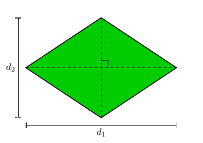

Introdução
Nosso objetivo ao longo desse material é encontrar fórmulas que expres-
sem as áreas de algumas figuras planas através de suas dimensões. Para
tanto, nosso ponto de partida é um quadrado unitário: por definição,
dizemos que a área de um quadrado de lado 1cm é igual a 1cm². (lê-se:
um centı́metro quadrado).
No restante desse material, utilizamos a definição acima para deduzir
fórmulas para as áreas de alguns polı́gonos convexos.
Considere, por exemplo, um retângulo cujos lados medem 2cm e 3cm.
A partir de um dos vértices do retângulo, podemos traçar, a cada
centı́metro, segmentos de retas perpendiculares aos lados, de modo que
o retângulo fique dividido em 2 x 3 = 6 quadrados de lado 1cm (veja a
figura abaixo). Desse modo, a área do retângulo é igual a 2 x 3 = 6cm².
O argumento utilizado para calcular a área do retângulo acima pode ser
facilmente estendido para calcular a área de qualquer retângulo cujos
lados tenham, por medidas, quantidades inteiras de centı́metros: se os
lados de um retângulo medem m e n centı́metros, com m e n inteiros,
então a sua área é igual a m x n cm². De fato, argumentando como no
exemplo acima, podemos facilmente particionar o retângulo em m x n
quadrados unitários.
Calculemos, agora, a área do quadrado desenhado na figura a seguir,
cujo lado mede
cm. Veja que podemos dividir o quadrado unitário (pintado de amarelho) em 9 quadradinhos menores de lado
Sendo assim, a área de cada um desses quadradinhos menores deve ser igual
= (
)²
cm². Por outro lado, traçando retas perpendiculares aos lados, podemos dividir o quadrado de lado
em 64 quadradinhos de lado
Portanto, concluı́mos que a área do quadrado de lado
cm deve ser igual (em cm2 ) a
64 x
=
= (
)².
Adaptando o argumento acima ao caso de retângulos, podemos mostrar
sem dificuldade que a área de qualquer retângulo cujos lados têm medidas
em centı́metros dadas pelos números racionais
e
é igual (em cm²)
x
Em retângulos cujos lados possuem medidas irracionais (em cm), a
ideia é aproximar (tanto quanto se queira) esses números irracionais
por números racionais e concluir que, ainda neste caso, temos que a área
é dada (em cm²) pelo produto das medidas dos lados. Dessa forma,
concluı́mos que:
A área de um retângulo de lados a e b é igual a ab.
Como caso particular da fórmula acima (fazendo a = b = l) temos que:
A área de um quadrado de lado l é igual a l² .
É importante observar que as fórmulas deduzidas acima, para a área
de um quadrado e um retângulo, permanecem válidas independentemente
da unidade de comprimento utilizada para medir seus lados. Por
exemplo, se chamarmos de unitário um quadrado de lado igual a 1m, e
dissermos que sua área é igual a 1m² (lê-se: metro quadrado), então a
área de um quadrado de lado (em m) igual a l será (em m²) igual a l² ,
ao passo que a área de um retângulo de lados (em m) iguais a a e b será
(em m²) igual a ab.
Nesse sentido, o único ponto relevante é como expressar em cm² uma
área dada em m², ou vice-versa. Para fazer isso, basta observar que,
tomando um quadrado de lado igual a 1m e dividindo cada lado em 100
partes iguais, particionamos o quadrado em 100² quadrados de lados
iguais a 1cm cada. Então, calculando áreas, concluı́mos que
1m² = 100²cm².
Calcularemos, agora, a área do paralelogramo ABCD, de base b e altura
h, desenhado na figura abaixo:

Consideremos (veja a parte de baixo da figura) a reta perpendicular
ao lado CD passando por C e sua interseção E com o prolongamento
do lado AB; como AB e CD são paralelos, AE e CE também são
perpendiculares. Além disso, denotemos por H o pé da perpendicular
ao lado AB passando pelo ponto D.
Afirmamos que os triâgulos AHD e BEC são congruentes. De fato,
como DCEH é um retângulo, temos
AB = CD = EH e, daı́,
AH = AB − HB
= HE − HB
= BE;
também, AD = BC, pois são lados opostos de um paralegramo, e AHD = BEC
= 90°. A congruência decorre, portanto, pelo caso especial CH, de
congruência de triângulos retângulos.
Assim, escrevendo A(F) para denotar a área de uma figura F, concluı́mos
que A(AHD) = A(BEC), de forma que
A(ABCD) = A(AHD) + A(HBCD)
= A(BEC) + A(HBCD)
= A(HECD)
= HE x h
= AB x h
= bh.
Em resumo,
A área de um paralelogramo de base b e altura h é bh.
Passamos, agora, ao cálculo da área de um triângulo ABC de base
AB = b e altura h, mostrado em verde na figura abaixo.
Considere o ponto D tal que ABDC é um paralelogramo. Então, a base
de tal paralelogramo mede b e sua altura mede h, de sorte que sua área
é igual a bh.
Mas, observe que os triângulos ABC e DCB são congruentes pelo caso
LLL, pois AB = DC e AC = DB (por serem pares de lados opostos de
um paralelogramo) e o lado BC é comum a ambos. Portanto, temos:
A(ABDC) = A(ABC) + A(DCB) = 2A(ABC)
e, daı́,
A(ABC) =
A(ABDC) =
bh.
Em resumo, concluı́mos que
A área de um triângulo de base b e altura h é
bh.
Área de losangos
Como aplicação da fórmula para a área de triângulos, examinemos o
caso dos losangos. Observando o losango na figura abaixo, vemos que
suas diagonais o dividem em quatro triângulos retângulos congruentes.
De fato, como diagonais se intersectam ao meio e os lados do losango
têm todos a mesma medida, a congruência entre os quatro triângulos
segue do caso LLL; logo, todos os ângulos no ponto de interseção das
diagonais são retos.

Se denotarmos as medidas das diagonais do losango por
um desses triângulos retângulos tem catetos de medidas
e
.
Como a área de um triângulo retângulo de catetos b e c é dada por
bv, temos que
x
x
=
.
Por fim, somando as áreas dos quatro triângulos, segue que o losango
tem área igual a
4 x
=
.
Área de trapézios
Já em relação ao trapézio da próxima figura, cujas bases paralelas medem
B e b e cuja altura mede h, traçando uma de suas diagonais o dividimos
em dois triângulos, um de base B e altura h e outro de base b e altura
h.
Portanto, a área do trapézio é dada por
+
=
=
Agora, apresentaremos uma fórmula para o cálculo da área de polı́gonos
regulares em função do apótema e do perı́metro do polı́gono. Inicialmente,
considere o triângulo equilátero ABC de lado l e apótema
, inscrito em um cı́rculo de centro O e raio R (veja a figura abaixo).
Como a figura sugere, podemos dividir o triângulo em três triângulos
congruentes, OAB, OAC e OBC, todos com área igual a
l x
Então, a área do triângulo equilátero ABC pode ser calculada por
A(ABC) = 3 x
=
=
=
em que p3 é o semiperı́metro do triângulo ABC.
Para expressarmos a área de ABC de outra maneira útil, comece observando que ABO
b = 30°. Então,
⇒
=
⇒